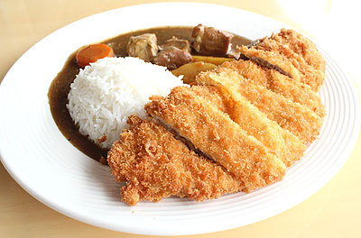

ข้าวหน้าแกงกะหรี่หมูทอด

ส่วนผสม
- แครอท (หั่นเต๋า) 1 หัว
- หอมใหญ่ (หั่นเต๋า) 1 ลูก
- น้ำมันพืช (สำหรับผัด)
- เนื้อหมูสับ
- พริกไทยป่น
- น้ำซุป
- เครื่องแกงกะหรี่ 3 ก้อน
- เนื้อมะม่วงสุก 1 ลูก
- น้ำผึ้ง 2 ช้อนโต๊ะ
- เนยสด
- เนื้อหมู
- เกล็ดขนมปัง
- ข้าวสวย
- ท็อปปิ้งชีส (Cheese Squeeze) สำหรับแต่งหน้า
วิธีทำ
- หั่นแครอท หอมใหญ่ และมันฝรั่งเป็นสี่เหลี่ยมลูกเต๋าเล็ก ๆ
- ผัดแครอท หอมใหญ่ และมันฝรั่งกับน้ำมันพืชพอนิ่ม จากนั้นใส่หมูสับและพริกไทย ลงไปผัดจนสุก เติมน้ำซุปลงไปพอท่วมส่วนผสม
- ละลายแกงกะหรี่ก้อนกับน้ำร้อนแล้วเทลงไปในหม้อ คนผสมให้เข้ากัน ต้มจนเดือด
- ปั่นมะม่วงสุกกับน้ำผึ้งจนเป็นเนื้อเดียวกัน เทส่วนผสมลงในน้ำแกงกะหรี่ สุดท้ายใส่เนยสดลงไปต้มจนเดือด ปิดไฟ พักไว้จนอุ่น
- พอส่วนผสมอุ่นแล้วนำไปปั่นจนเป็นซอสเนื้อเนียน ๆ เตรียมไว้
- นำเนื้อหมูไปชุบเกล็ดขนมปังให้ทั่ว ใส่ลงในกระทะทอดจนกรอบ
- ตักข้าวใส่จาน วางหมูทอดลงไป ราดด้วยน้ำแกงกะหรี่ สุดท้ายบีบท็อปปิ้งชีสลงไปบนหมูทอด พร้อมเสิร์ฟ